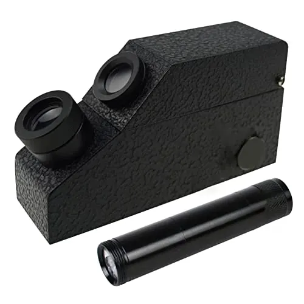

比重測試：寶石的「體重計」
每一種寶石都有「標準體重」——比重一測，是紅寶是石榴石立刻分家。

核心定義
比重（specific gravity，SG）＝寶石密度÷水的密度——每種寶石有固定比重：鑽石 3.52、紅寶 4.0、祖母綠 2.7、石英 2.65、翡翠 3.33。比重測量讓「外觀相似的寶石」靠「重量」分出真身。
測量方法：① 精密天平（空氣中重量÷水中重量＝比重）；② 比重液（寶石在液體中浮沉判斷）；③ 手感（老行家掂一下——比重大的壓手）。三種方法，從儀器到直覺。
特徵與分類
| 寶石 | 比重 | 手感 |
|---|---|---|
| 紅寶 | 4.0 | 重 |
| 鑽石 | 3.52 | 重 |
| 翡翠 | 3.33 | 壓手 |
| 石榴石 | 3.5–4.3 | 重 |
| 祖母綠 | 2.7 | 中 |
| 石英 | 2.65 | 中 |
| 蛋白石 | 2.0 | 輕 |
比重的經典應用：紅寶（4.0）vs 石榴石（3.5-4.3 需精確區分）vs 尖晶石（3.6）——外觀相似的紅色寶石，比重一測現形；翡翠（3.33）vs 水沫子（2.6）——「壓手」與「輕飄」一目了然。
科學原理
比重的物理：阿基米德原理——物體在水中所受浮力＝排開水的重量。精密天平法：乾重÷（乾重−水中重）＝比重。比重是「化學成分＋晶體結構」的綜合表現——每種礦物的「體重」是固定值。
比重液的應用：比重液（如二碘甲烷 3.32、四溴甲烷 2.96）——寶石沉浮即知比重範圍。但比重液有毒（揮發性）——現代多用精密天平，比重液僅限專業。
鑑定與鑑別方法
- 精密天平：乾重/水中重計算
- 比重液：沉浮判斷（專業）
- 手感：比重大的壓手
- 排除法：比重不符即非該寶石
- 配合折射率：雙重確認
市場行情與保養建議
市場價值：比重是「鑑定的第二把鑰匙」——配合折射率（第一把），九成寶石可初步定位。消費者靠「手感」初篩（壓手/輕飄），鑑定師靠精密天平精確測量。
提醒：比重測量需無鑲嵌裸石（鑲嵌品含金屬無法測）——戒指手鐲的鑑定，靠折射儀＋顯微鏡。裸石交易，比重是必測項目。
常見誤區
「重」是相對的——鉛玻璃（仿品）也很重。手感是快篩，比重精確值才是判決。
石榴石家族比重範圍廣（3.5–4.3）——比重接近不同種。比重要配合折射率與光譜，綜合判斷。
冷知識
「尤里卡！」——阿基米德用浮力原理驗證王冠是否純金——兩千多年前，比重鑑定就誕生了。
金屬托爪會干擾測量——所以珠寶鑑定要先「拆石」。裸石測比重、鑲嵌品靠其他方法。
反直覺觀點
比重與價值無關——蛋白石輕如塑膠，黑蛋白石貴如鑽石。體重不決定身價。
阿基米德的浮力原理，是現代比重天平的物理基礎——最古老的科學，最可靠的鑑定。